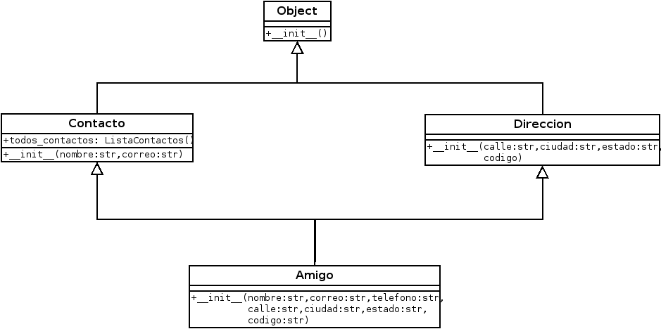

Volviendo a lo básico, POO en Python (multiple herencia) (parte 7)
Posted on sáb 31 diciembre 2016 in Tutorial Python • 2 min read
Continuando con los artículos de programación orientada a objetos con python, en este caso se tocará el caso de multiple herencia.
La siguiente figura se muestra el diagrama UML:

Se tienen las siguientes clases y de quien hereda:
- Direccion(object): Tiene un método init que recibe los argumentos calle, ciudad, estado y codigo.
- Contacto(object): Tiene un método init con recibe los argumentos nombre y correo.
- Amigo(Contacto,Direccion): Tiene un método init que recibe los argumentos nombre, correo, telefono, calle, ciudad, estado y codigo.
- ListaContactos: Tiene un método buscar que recibe un nombre como argumento.
Clase ListaContactos:
class ListaContactos(list):
def buscar(self,nombre):
'''Retorna todos los contactos que contengan el nombre'''
contactos_encontrados = []
for contacto in self:
if nombre in contacto.nombre:
contactos_encontrados.append(nombre)
return contactos_encontrados
Clase Direccion:
class Direccion(object):
def __init__(self,calle, ciudad,estado, codigo):
'''Inicializa la clase con la calle, ciudad, estado y codigo postal)'''
self.calle = calle
self.ciudad = ciudad
self.estado = estado
self.codigo = codigo
Clase Contacto:
class Contacto(object):
'''Clase contacto que guarda una lista de los contactos e inicializa con el nombre y el correo del contacto'''
todos_contactos = ListaContactos()
def __init__(self,nombre, correo):
self.nombre = nombre
self.correo = correo
Contacto.todos_contactos.append(self)
Clase Amigo:
class Amigo(Contacto,Direccion):
def __init__(self,nombre, correo, telefono,calle,ciudad,estado,codigo):
Contacto.__init__(self,nombre,correo)
self.telefono = telefono
Direccion.__init__(self,calle,ciudad,estado,codigo)
La instanciación de la clase amigo se muestra a continuación:
contacto = Amigo("Ernesto","seraph2@contacto.com","04155556565","paez","guacara","carabobo","2015")
print(contacto.nombre,contacto.correo,contacto.telefono,contacto.calle,contacto.ciudad,contacto.estado,contacto.codigo)
Al ejecutar el programa se tiene la siguiente salida:
Ernesto seraph2@contacto.com 04155556565 paez guacara carabobo 2015
El código completo de este artículo se encuentra en gitlab en el siguiente enlace.
¡Haz tu donativo! Si te gustó el artículo puedes realizar un donativo con Bitcoin (BTC) usando la billetera digital de tu preferencia a la siguiente dirección: 17MtNybhdkA9GV3UNS6BTwPcuhjXoPrSzV
O Escaneando el código QR desde la billetera: